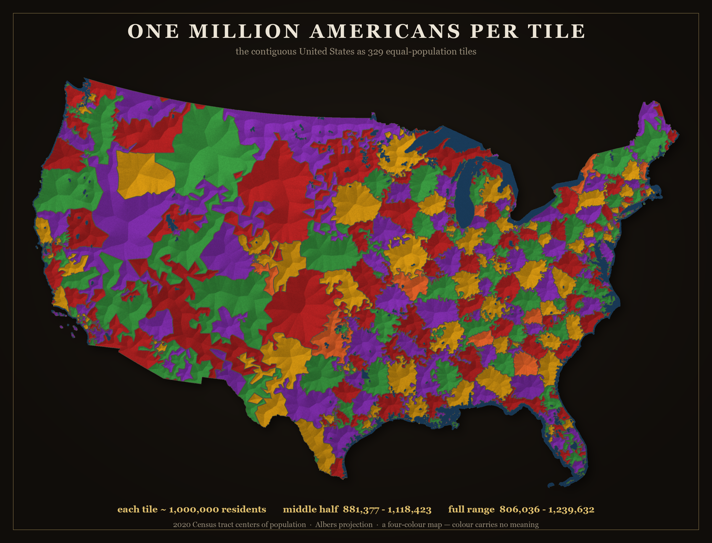
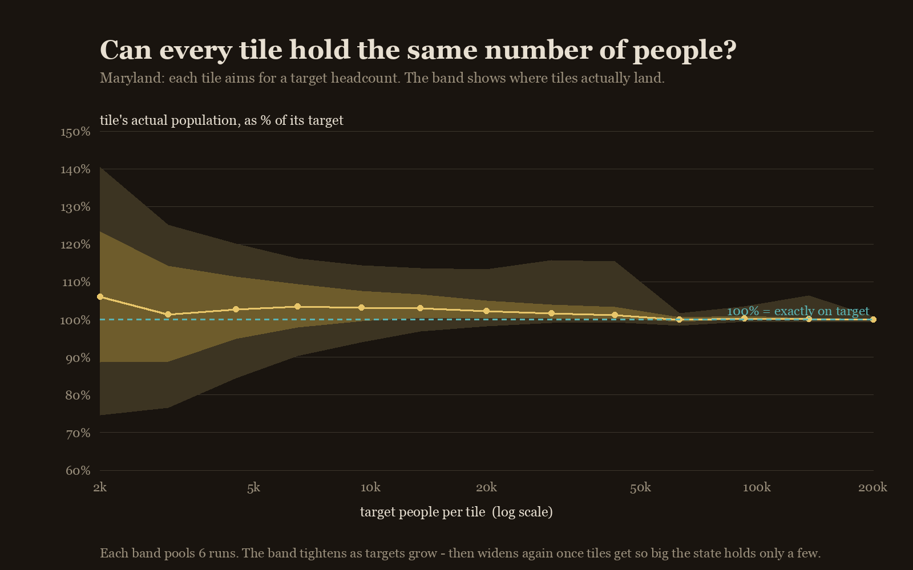
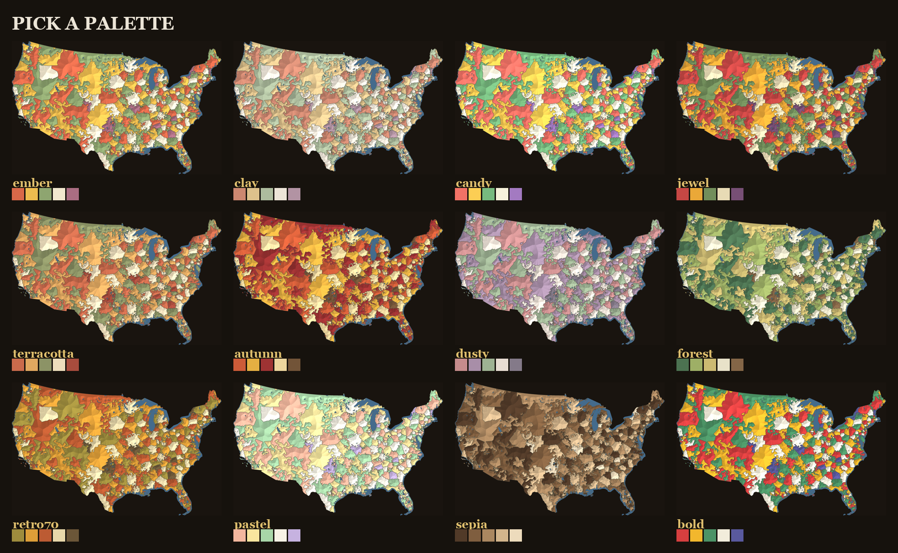

The contiguous United States cut into 329 pieces that each hold about the same
number of people. A tile's size is inverse population density — small where millions
pack in, vast where almost no one lives.

329 tiles · each ≈ 1,000,000 residents (middle half 881k–1,118k) · 2020 Census
tracts · Albers projection · a four-colour map, colour carries no meaning.
Units. Census tract centers of population (~4,000 people each) — the
practical finest nationwide unit.
Bucketing. Grow contiguous clusters to a target headcount, then move border tracts
to equalise population and gently round the shapes in.
Colour. The fewest colours so no two neighbouring tiles match — the four-colour
theorem in action. Colour means nothing.
Render. Mosaic-style tiles with thin grout; rivers and lakes in blue.
How equal is "equal"?

How tightly the tiles can hold a target headcount, and how that tightens as the
target grows (Maryland). The band closes toward 100%, then flares once a place holds only a
few tiles.
Thirteen colourways

The same tiling in every built-in palette. The colour carries no data — it's
chosen for the eye.
Prior art
Partitioning a place into equal-population pieces is an old idea. The closest
relatives are Neil Freeman's Fifty States with
Equal Population, the Engaging
Data / FlowingData "split the US by population" interactives, Slate's Equal Population Mapper,
and capacity-constrained Voronoi / automated-redistricting methods generally. What's different
here is the granularity — hundreds of tiles, so it reads as a texture rather than a few regions —
and the art-first execution.
2020 US Census · public domaincode: numpy · scipy · pillowMIT licensed